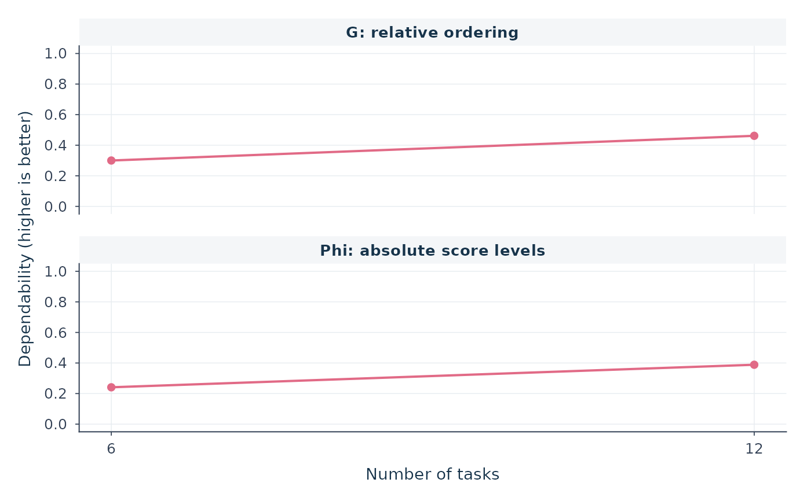

Plan measurement conditions with a D-study
Source:R/api-gstudy-entry.R, R/api-multivariate-gtheory.R
mfrm_d_study.RdWould adding tasks or raters make assessment scores more dependable? Use an estimated G-study to compare specified future designs for individual score components and optional weighted composites. Each scenario reports dependability and measurement error for mean scores over common random measurement conditions, such as tasks, raters, or occasions. Projection from an estimated G-study does not refit. Supplying an MFRM first estimates the separate main-effects G-study described below.
Usage
mfrm_d_study(x, design_grid = NULL, ...)
# Default S3 method
mfrm_d_study(x, design_grid = NULL, ...)
# S3 method for class 'mfrm_multivariate_gstudy'
mfrm_d_study(
x,
design_grid = NULL,
weights = NULL,
negative_components = c("raw", "genova_algorithm", "genova_ems"),
...
)
# S3 method for class 'mfrm_multivariate_d_study'
print(x, digits = NULL, row.names = FALSE, ...)Arguments
- x
A result from
mfrm_g_study(). A main-effects result frommfrm_generalizability()or a fitted MFRM uses the separate main-effects method, with its collapsed-residual assumptions. Dispatch preserves the source model; it does not select a new estimator.- design_grid
A nonempty data frame or named list with one positive integer count column per G-study facet. Both G-study routes accept the exact facet label or
n_<facet>, such asn_Raterandn_Task. Existing saved count-column names are also accepted: with therater/taskinterface, useRatersand/orTasksfor the included facets. Withfacets, use its exact labels, for exampleRaterandOccasionforfacets = c(Rater = "Assessor", Occasion = "Session"). The mapping is available inx$design$count_columns. Supply exactly one column per facet; extra columns, duplicate aliases and ambiguous matches are refused. Output keeps the saved count-column names, so existing plot and interval selections retain their meaning. Each row is one future complete balanced design preserving the G-study's crossed or nested structure. Fornesting = c(Rater = "Task"),Ratersmeans raters per task, not the total rater pool.NULLuses the G-study counts (children per parent for a nested facet) only when its retained data are complete and balanced; incomplete or unequal designs require an explicit grid. Counts need not match or exceed the G-study counts. Conditions are shared across persons and scores in every scenario.- ...
Arguments for the selected method. The fitted-MFRM method accepts arguments to
mfrm_generalizability(); already estimated G-studies reject unused arguments. Printing accepts arguments for its coefficient table.- weights
Optional named numeric vector for one composite, or a numeric matrix for several named composites. A vector must name every original score exactly once; matrix rows must name every score exactly once, and columns must have unique, nonempty composite names. Rows are matched by name, regardless of order. Every weight must be finite and each composite must have at least one nonzero weight. Signed weights allow difference scores, for example
c(Content = 1, Organization = -1). Weights are used as supplied, without normalization.NULLreports original scores only. Otherwise, each scenario reports the original scores once, followed by each composite. A vector's composite is named"Composite"; a matrix preserves its column names and order.- negative_components
Component treatment for D-study point projections.
"raw"(default) retains the original estimates."genova_algorithm"replaces negative variance components with zero;"genova_ems"first recalculates components by source-design expected-mean-square equations, substituting zero as each negative component is encountered. The latter choices require a complete balanced univariate ANOVA G-study with one or two supported crossed or nested random facets. Original G-study estimates remain unchanged. These options do not supply adjusted-estimator intervals.- digits
Display precision passed to the printed tables;
NULLuses R's current setting. Stored estimates are unchanged.- row.names
Logical; print table row names? Defaults to
FALSE.
Value
An mfrm_multivariate_d_study list containing coefficients
(scenario, counts of included facets, score/composite identity,
universe/relative/absolute variances under the selected treatment,
G/Phi, relative/absolute SEM, ComponentTreatment, and
row and metric-specific status, and ComponentPSD), covariances
(three matrices per scenario), design_grid,
weights (the supplied vector or matrix, reordered to the G-study score
order), component_diagnostics,
negative_components, effective_components,
effective_component_diagnostics, and gstudy (the unchanged source result).
summary() returns coefficients.
print() returns the same D-study invisibly without computing intervals.
summary.mfrm_multivariate_d_study() with intervals = TRUE explicitly
calculates and collects supported intervals, methods and source context.
print() also shows source level/row counts, future-plan conventions and
the supplied composite weights. Save the full result with saveRDS(d)
and reopen with readRDS() to preserve that context. A CSV of
summary(d) contains the coefficient table only; accompany it with the
weights, source design and row usage, future design and score convention.
Main-effects inputs instead retain their mfrm_d_study data-frame result;
see mfrm_d_study_main_effects for its fields and limitations.
Details
Projects universe, relative-error, and absolute-error covariances across
complete balanced future designs (design_grid counts apply per Person;
nested child counts are per parent). For crossed P, R, T, relative
error is PR/n_r + PT/n_t + E/(n_r*n_t) and absolute error adds
R/n_r + T/n_t + RT/(n_r*n_t); for R(T) nested in T, relative error is
PT/n_t + E/(n_r*n_t) and absolute error adds T/n_t + R(T)/(n_r*n_t); for
one facet F, errors are E/n and (F + E)/n. Individual scores use
matrix diagonals; composites use w' Sigma w without weight normalization
(G = UniverseVariance / (UniverseVariance + RelativeErrorVariance), Phi
uses AbsoluteErrorVariance, and SEMs are square-root error variances in
score/composite units).
Negative components and availability: Default "raw" keeps unconstrained
estimates (gstudy retains raw components; "genova_algorithm" and
"genova_ems" apply balanced univariate ANOVA zero-replacement rules in
effective_components, while confint() retains original-source population
intervals alongside IntervalEstimate). G/Phi require nonnegative
universe and error variances with positive sum; SEMs require nonnegative
error variance. Metric-specific status columns explain NA (Unavailable is
never coerced to zero), and ComponentPSD flags non-PSD source matrices. For
sampling intervals and paired differences, see
confint.mfrm_multivariate_d_study() and mfrm_d_study_comparison.
References
Brennan, R. L. (2001). Generalizability theory. Springer. Chapters 9–11. doi:10.1007/978-1-4757-3456-0 .
Brennan, R. L. (2001). Manual for mGENOVA, Version 2.1. Iowa Testing Programs Occasional Papers, No. 50. Pages 16 and 20–22; Appendices E and F, pages 74–81. Crick, J. E., and Brennan, R. L. (2021). Manual for jGENOVA, Version 1.0. Pages 2-10–2-11, 3-5, and A-22–A-23. Both manuals are available from the author's GENOVA Suite.
See also
plot.mfrm_multivariate_d_study(), mfrm_g_study(),
mfrm_d_study_comparison, mfrm_d_study()
Examples
# Published synthetic two-score data: the same six tasks for ten persons.
tasks <- read.csv(system.file("extdata", "mgenova-table12.csv", package = "mfrmr"))
g <- mfrm_g_study(tasks, c("V", "W"), rater = NULL)
# Question: would doubling tasks improve the dependability of W minus V?
d <- mfrm_d_study(g, data.frame(Tasks = c(6, 12)),
weights = c(V = -1, W = 1))
summary(d)
#> Scenario Tasks Kind Score UniverseVariance RelativeErrorVariance
#> 1 1 6 Score V 0.36814815 0.2087037
#> 2 1 6 Score W 0.36888889 0.2561111
#> 3 1 6 Composite Composite 0.09851852 0.2298765
#> 4 2 12 Score V 0.36814815 0.1043519
#> 5 2 12 Score W 0.36888889 0.1280556
#> 6 2 12 Composite Composite 0.09851852 0.1149383
#> AbsoluteErrorVariance G Phi RelativeSEM AbsoluteSEM Status
#> 1 0.2661111 0.6382022 0.5804380 0.4568410 0.5158596 Available
#> 2 0.3094444 0.5902222 0.5438165 0.5060742 0.5562773 Available
#> 3 0.3100000 0.3000000 0.2411605 0.4794544 0.5567764 Available
#> 4 0.1330556 0.7791495 0.7345280 0.3230354 0.3647678 Available
#> 5 0.1547222 0.7423141 0.7045093 0.3578485 0.3933475 Available
#> 6 0.1550000 0.4615385 0.3886048 0.3390255 0.3937004 Available
#> GStatus PhiStatus RelativeSEMStatus AbsoluteSEMStatus ComponentPSD
#> 1 Available Available Available Available TRUE
#> 2 Available Available Available Available TRUE
#> 3 Available Available Available Available TRUE
#> 4 Available Available Available Available TRUE
#> 5 Available Available Available Available TRUE
#> 6 Available Available Available Available TRUE
#> ComponentTreatment
#> 1 raw
#> 2 raw
#> 3 raw
#> 4 raw
#> 5 raw
#> 6 raw
plot(d)

# G rises from 0.300 to 0.462, conditional on these estimated components.
# This is a planning projection, not evidence from twelve observed tasks.
# Optional alternative views, GENOVA conventions and composite weights.
# example("mfrm_d_study", run.dontrun = TRUE)
if (FALSE) { # \dontrun{
plot(d, type = "sem")
# Without weights, report the original scores without creating a composite.
individual <- mfrm_d_study(g, data.frame(Tasks = c(6, 12)))
plot(individual, score = "V")
# Explicit GENOVA convention for a single observed score.
g_one <- mfrm_g_study(tasks, "V", rater = NULL)
d_ems <- mfrm_d_study(g_one, data.frame(Tasks = c(6, 12)),
negative_components = "genova_ems")
summary(d_ems)
ci_ems <- confint(d_ems, assumption = "normal")
# Adjusted point and original-source population interval have separate bases.
ci_ems[, c("Estimate", "IntervalEstimate", "Lower", "Upper", "IntervalBasis")]
d_ems$effective_components # Compare with d_ems$gstudy$components.
plot(d_ems, metric = "G", intervals = ci_ems) # Original-source population bounds.
# Compare weight choices on the same task-count scenarios.
weights <- cbind(Equal = c(V = 0.5, W = 0.5),
W_focus = c(V = 0.2, W = 0.8), Difference = c(V = -1, W = 1))
alternatives <- mfrm_d_study(g,
data.frame(Tasks = c(6, 12)), weights = weights)
summary(alternatives) # Original scores plus all three named composites.
plot(alternatives, composite = "Equal")
plot(alternatives, composite = "Difference", type = "sem")
# Choose weights for the intended interpretation, not solely for higher G.
} # }